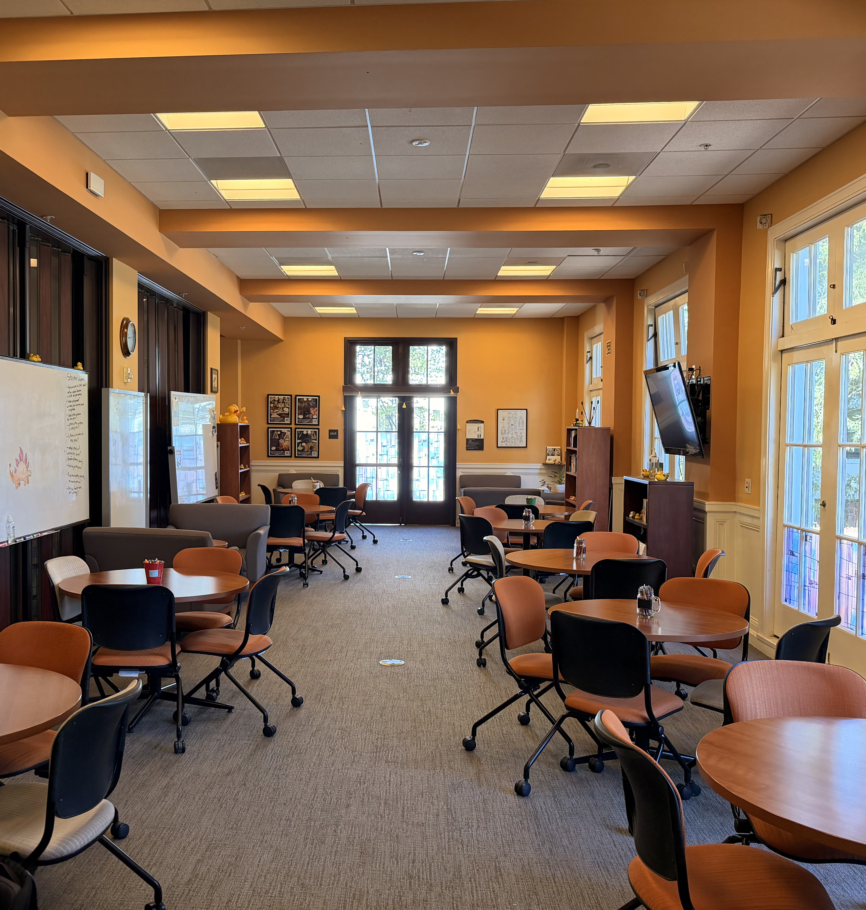
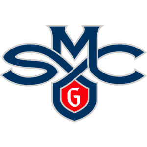

Life at CWAC
A look at our tutoring center.




Saint Mary's College of California
The Center for Writing Across the Curriculum (CWAC) at SMC is a free, student-centered resource that supports writers at every stage of the writing process. Whether you're working on an essay, a scientific lab report, or a senior thesis, CWAC tutors are here to help no matter what.
CWAC tutors are trained SMC students and faculty who provide one-on-one consultations focused on your goals as a writer beyond just fixing any errors.
Get one-on-one help with argument structure, thesis development, and organization for any essay type.
Work through concerns like grammar, punctuation, and academic tone with a tutor.
From finding sources to creating citations (MLA, APA, etc...), CWAC can guide your through the process.
CWAC supports lab reports, scientific papers, and STEM writing with knowledgable feedback.
A look at our tutoring center.

Fill out the form below to request a CWAC tutoring appointment.